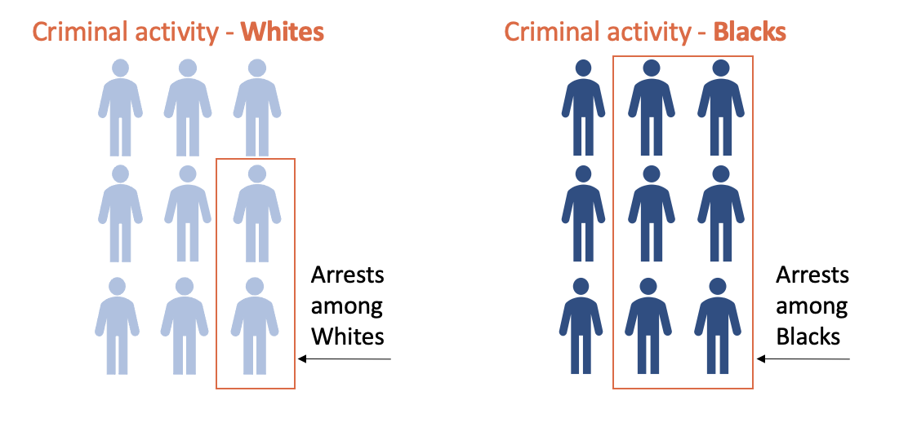
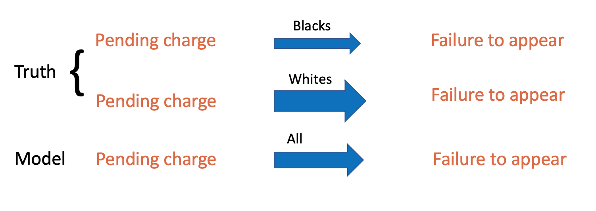
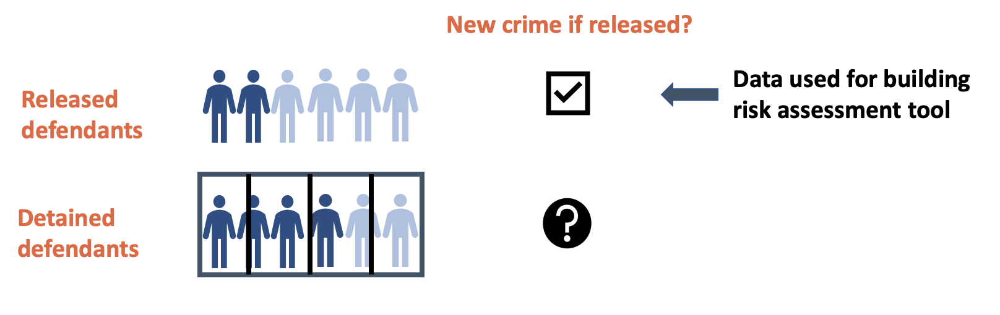

Bias in estimating predicting probabilities
Here, we highlight three potential sources of bias in the first step of developing and using predictive analytics: estimating the predicted probabilities of the outcome of interest.
Bias in the data
In the administrative data used to develop and validate pretrial assessments, some data elements are very likely to be inherently biased. A key challenge is that crime data does not exist. Data only captures contacts with police and decisions made after that. Therefore, to the extent that police activity and subsequent steps in the criminal justice system are biased, the data are biased.
Consider measures of criminal activity, for example. One factor leading to recorded criminal activity is the likelihood of getting arrested. This likelihood can vary by race even when the true level of criminal activity is constant. For example, individuals who live in areas with elevated amounts of policing will tend to have more arrests than individuals with the same criminal behavior who live in areas with less policing. The level of policing in neighborhoods is often correlated with race. Therefore, White and Black populations with the same actual prevalence of criminal behavior will be arrested at different rates for such behavior.

The resulting bias in the data affects both the risk factors used as predictors in a risk assessment tool and the outcomes predicted by a risk assessment tool – such as failure to appear for court or new criminal activity during the pretrial period. An assessment that depends on risk factors that are biased may perpetuate this bias because it could score a Black defendant as at higher risk than a White defendant with the same true level of risk.
With respect to outcomes, particularly the outcome of new criminal activity, Black defendants awaiting trial and living in highly policed areas may be more likely to be picked up for similar offenses than White defendants awaiting trial in other areas. Therefore, even if the predictors in a risk assessment are not biased, the evaluation of the risk assessment could suggest bias, as a larger proportion of Black defendants with the same risk score could have new arrests than did similar White defendants.
Bias in modeling
Even if the risk factors and outcomes involved in a risk assessment are all measured without bias, the underlying model of a risk assessment could still potentially introduce bias. This situation can occur if the relationships between the risk factors and the outcome are different for different racial groups. Take, for example, a condition where pending charge predicts an outcome better for White defendants than Black ones (perhaps because the level of the pending charge among White people signals involvement in a relatively more serious crime level than pending charge among Black people – due to potential bias towards Blacks in the assignment of charges). If a model is then fit to all the data, which would average the two trends, pending charge for Black people would predict a higher risk score than the truth.

Bias in censoring
A third source of bias in the initial phase of risk assessment—calculating the risk score—stems from “differential censoring.” This term refers to the challenge arising when predictive models are typically developed using data from defendants who were not detained pre-trial. These individuals have complete data sets, unlike their detained counterparts, for whom we lack data on whether they would have failed to appear in court or been involved in new criminal activity if released.
The problem intensifies when the risk assessment tools, designed from the non-detained population, are applied universally—to both those who we be detained and not. This application can lead to inaccuracies if those detained exhibit systematic differences from those not detained, leading to models that do not effectively predict the risk levels of the detained population.
Furthermore, if detention trends vary by race, developing models from different racial subsets due to differential censoring can introduce bias. In essence, as illustrated in the picture below, a lack of complete data for detained individuals and potential systematic differences between detained and non-detained populations can undermine the accuracy and fairness of the resulting risk assessment models.
